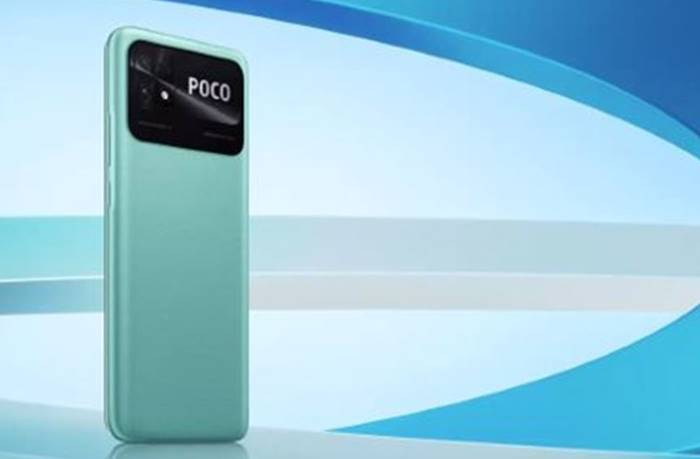

Smartphone terbaik tak harus mahal harganya, HP harga 1 jutaan pun bisa jadi pilihan tepat. Berikut adalah perangkat di kisaran sejutaan terbaik Indonesia yang layak jadi pilihan di tahun 2022 ini.
Asal jeli, dengan bujet minim pun kita tetap bisa mendapatkan HP performa terbaik. HP 1 juta yang tersedia di pasar ternyata banyak yang menyediakan spesifikasi mumpuni.
Daftar Hp 1 Jutaan Yang worth It Di Tahun 2022
1. Poco C40

Xiaomi Poco C40
Poco membawa rekomendasi HP 1 jutaan yang terbarunya yaitu Poco C40. HP dibawah 2 juta buatan vendor Cina ini mengusung layar LCD Dot Drop Display 6,71 inci yang mampu menghasilkan gambar berkualitas HD+.
Untuk menunjang performanya, Poco C40 dibekali spesifikasi berupa chipset prosesor JLQ JR510, dengan proses teknologi 11nm dan CPU Cortex-A55 dengan kecepatan hingga 2.0GHz, serta GPU Mali-G52.
Kapasitas RAM dan memorinya sebesar 3 GB dan 4 GB, dan memori 32 GB serta 64 GB. Kapasitas baterainya 6.000 mAh dan harga Poco C40 dibanderol mulai dari Rp 1.599.000.
Spesifikasi Xiaomi Poco C40
- Rilis: September 2022
- Network: 2G, 3G, 4G
- OS: Android 11, MIUI 13 for POCO
- Chipset: JLQ JR510 (11 nm)
- CPU: Octa-core (4×2.0 GHz Cortex-A55 & 4×1.5 GHz Cortex-A55)
- GPU: Mali-G57 MC1
- RAM: 3 GB, 4 GB
- Memori: 32 GB, 64 GB
- Dimensi: 169.6 x 76.6 x 9.2 mm, 204 gram
- Layar: IPS LCD 6,71 inci, HD+
- Kamera Utama: 13 MP + 2 MP
- Kamera Depan: 5 MP
- Baterai: 6000 mAh, Fast Charging 18W
- NFC : Yes
- Warna: Power Black, Coral Green, Poco Yellow
- Harga: Mulai dari Rp 1.599.000.
2. Tecno Spark 9T
Di tahun 2022 ini, Tecno Indonesia masih konsisten membawa smartphone entry level di pasaran, dan yang terbaru adalah Spark 9T. HP 1 jutaan terbaik 2022 ini ditenagai oleh Mediatek Helio G37, yang dipadukan dengan RAM 4 GB dan memori 64 GB serta baterai 5.000 mAh.
Ponsel ini sudah berjalan di sistem operasi Android 12 terbaru dengan ragam fitur di dalamnya. Salah satu fitur andalan yang dibawa ponsel ini adalah Memory Fusion.
Dengan fitur ini, pengguna dapat “menambah” RAM bawaan menjadi total 7 GB. Harga HP 1 jutaan RAM 4 GB ini adalah Rp 1.699.000.
Spesifikasi Tecno spark 9T
- Rilis: September 2022
- Network: 2G, 3G, 4G
- OS: Android 12
- Chipset: Mediatek Helio G37
- CPU: Octa-core (4×2.3 GHz Cortex-A53 & 4×1.8 GHz Cortex-A53)
- GPU: PowerVR GE8320
- RAM: 4 GB
- Memori: 64 GB
- Layar: IPS LCD 6,56 inci HD+ dan refresh rate 90 Hz
- Kamera Utama: 13 MP + 2 MP + Kamera AI
- Kamera Depan: 32 MP
- Baterai: 5000 mAh, Fast Charging 18W
- NFC: No
- Warna: Quantum Black, Burano Blue, dan Particle Silver
- Harga: Mulai dari Rp 1.699.000.